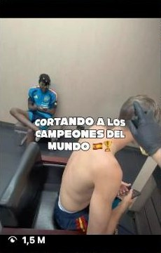
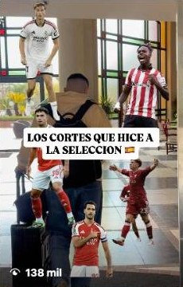
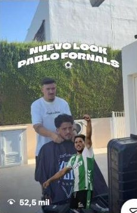
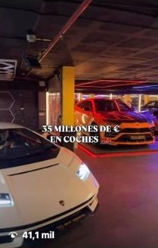
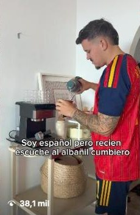
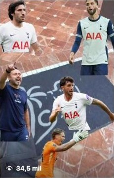
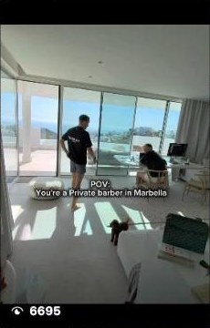
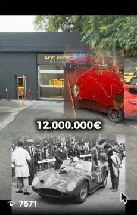
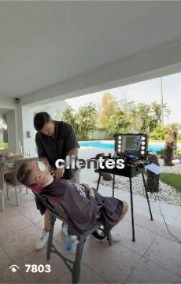

<title>Propuesta Otero Barber</title>
<meta name="claude:viewport-fit-sides" content="cover">
<link rel="preconnect" href="https://fonts.googleapis.com">
<link rel="preconnect" href="https://fonts.gstatic.com" crossorigin>
<link rel="stylesheet" href="https://fonts.googleapis.com/css2?family=Roboto+Serif:ital,opsz,wdth,wght@0,8..144,50..150,400..800;1,8..144,50..150,400..800&family=Red+Hat+Display:wght@400;500;600;700&display=swap">
<style>
/* Layout: editorial column on white, black bands (the logo's own ground) for hero + propuesta + footer, gold dots from "• VIP BARBER •" as the one recurring mark, reel covers as evidence strips */
:root{
  --cal:#F7F6F3; --tinta:#0B0B0B; --piedra:#DEDAD2; --oro:#8A6526; --punto:#C99C54;
  --suave:#57544F; --superficie:#EEECE7; --banda:#0B0B0B; --banda-fg:#F5F3EF; --banda-oro:#D9AE63; --banda-suave:#A9A59E; --banda-linea:#33312D;
  --f-display:"Roboto Serif", "Georgia", "Times New Roman", serif;
  --f-label:"Red Hat Display", "Helvetica Neue", Arial, sans-serif;
  --f-text:"Red Hat Display", "Helvetica Neue", Arial, sans-serif;
  --max:1080px;
}
@media (prefers-color-scheme: dark){:root:not([data-theme="light"]){
  --cal:#111110; --tinta:#F2F0EC; --piedra:#2F2D2A; --oro:#D9AE63; --punto:#C99C54; --suave:#A9A59E; --superficie:#1A1917; --banda:#000000; --banda-fg:#F5F3EF; --banda-oro:#D9AE63; --banda-suave:#A9A59E; --banda-linea:#2A2825; color-scheme:dark}}
:root[data-theme="dark"]{
  --cal:#111110; --tinta:#F2F0EC; --piedra:#2F2D2A; --oro:#D9AE63; --punto:#C99C54; --suave:#A9A59E; --superficie:#1A1917; --banda:#000000; --banda-fg:#F5F3EF; --banda-oro:#D9AE63; --banda-suave:#A9A59E; --banda-linea:#2A2825; color-scheme:dark}

*{box-sizing:border-box}
body{background:var(--cal);color:var(--tinta);font-family:var(--f-text);font-size:17px;line-height:1.6;-webkit-font-smoothing:antialiased}
.wrap{max-width:var(--max);margin:0 auto;padding-left:max(16px, env(safe-area-inset-left, 0px));padding-right:max(16px, env(safe-area-inset-right, 0px))}
section{padding-block:72px;border-top:1px solid var(--piedra)}
h1,h2,h3{font-family:var(--f-display);font-weight:700;font-stretch:72%;font-optical-sizing:auto;text-wrap:balance;margin:0;letter-spacing:-.005em}
h2{font-size:clamp(32px,4.8vw,50px);line-height:1.06;max-width:22ch}
h3{font-size:22px;line-height:1.2;font-weight:650;font-stretch:80%}
p{margin:0}
.lead{font-size:19px;color:var(--suave);max-width:62ch}
.eyebrow{font-family:var(--f-label);font-weight:700;text-transform:uppercase;letter-spacing:.2em;font-size:12.5px;color:var(--oro);display:flex;align-items:center;gap:10px}
.eyebrow::before{content:"";width:7px;height:7px;border-radius:50%;background:var(--punto);flex:none}
.head{display:grid;gap:14px;margin-bottom:40px}
em{font-style:italic}

/* hero band */
.hero{background:var(--banda);color:var(--banda-fg);padding-block:48px 64px}
.hero .top{display:flex;align-items:center;justify-content:space-between;gap:16px;flex-wrap:wrap;margin-bottom:64px}
.hero .logo{width:144px;height:auto;display:block}
.hero .top .handle{display:flex;align-items:center;gap:10px;font-family:var(--f-label);font-weight:600;font-size:14px;color:var(--banda-suave)}
.hero .top .handle img{width:36px;height:36px;border-radius:50%;object-fit:cover;border:1px solid var(--banda-linea)}
.hero h1{font-size:clamp(42px,7.6vw,88px);line-height:1.02;max-width:15ch}
.hero h1 em{color:var(--banda-oro)}
.hero .lead{color:var(--banda-suave);margin-top:24px}
.hero .meta{margin-top:40px;font-family:var(--f-label);font-weight:600;font-size:13px;letter-spacing:.14em;text-transform:uppercase;color:var(--banda-suave)}

/* numbers */
.cifras{display:grid;grid-template-columns:repeat(4,minmax(0,1fr));gap:1px;background:var(--piedra);border:1px solid var(--piedra)}
.cifra{background:var(--cal);padding:22px 20px;display:grid;gap:6px;align-content:start}
.cifra b{font-family:var(--f-display);font-weight:700;font-stretch:72%;font-size:clamp(32px,4vw,44px);line-height:1;font-variant-numeric:tabular-nums}
.cifra span{font-size:14px;color:var(--suave);line-height:1.4}
.nota{font-size:13px;color:var(--suave);margin-top:14px}

/* reel strips */
.tira-titulo{display:flex;align-items:baseline;justify-content:space-between;gap:16px;flex-wrap:wrap;margin:44px 0 16px}
.tira-titulo h3{font-size:24px}
.tira-titulo p{font-size:15px;color:var(--suave);max-width:46ch}
.tira{display:grid;grid-template-columns:repeat(6,minmax(0,1fr));gap:10px}
.tira.cuatro{grid-template-columns:repeat(4,minmax(0,1fr))}
.reel{margin:0;display:grid;gap:8px;min-width:0}
.reel img{width:100%;aspect-ratio:231/360;object-fit:cover;border-radius:4px;display:block;background:var(--superficie)}
.reel figcaption{font-size:13px;line-height:1.35;color:var(--suave)}
.reel figcaption b{display:block;font-family:var(--f-label);font-weight:700;font-size:16px;letter-spacing:.01em;color:var(--tinta)}
.tira.baja img{filter:grayscale(.35)}

/* lists */
.dos{display:grid;grid-template-columns:1fr 1fr;gap:48px}
.lista{list-style:none;margin:0;padding:0;display:grid;gap:20px}
.lista li{display:grid;gap:4px;padding-top:16px;border-top:1px solid var(--piedra)}
.lista li strong{font-weight:600}
.lista li span{color:var(--suave);font-size:16px}

/* process */
.pasos{display:grid;grid-template-columns:repeat(4,minmax(0,1fr));gap:20px;counter-reset:p}
.paso{display:grid;gap:10px;align-content:start;padding-top:18px;border-top:2px solid var(--tinta)}
.paso .n{font-family:var(--f-label);font-weight:700;font-size:13px;letter-spacing:.16em;color:var(--oro);text-transform:uppercase}
.paso p{font-size:15px;color:var(--suave)}

/* caminos */
.caminos{display:grid;grid-template-columns:repeat(3,minmax(0,1fr));gap:16px}
.camino{border:1px solid var(--piedra);padding:24px;display:grid;gap:14px;align-content:start;background:var(--cal)}
.camino .letra{font-family:var(--f-display);font-weight:700;font-stretch:72%;font-size:44px;line-height:1;color:var(--oro)}
.camino dl{margin:0;display:grid;gap:10px}
.camino dt{font-family:var(--f-label);font-weight:700;font-size:12px;letter-spacing:.14em;text-transform:uppercase;color:var(--suave)}
.camino dd{margin:0;font-size:15px}
.camino .frase{font-family:var(--f-display);font-style:italic;font-weight:500;font-stretch:85%;font-size:18px;line-height:1.3;border-top:1px solid var(--piedra);padding-top:14px}
.pregunta{margin-top:28px;font-family:var(--f-display);font-weight:600;font-stretch:80%;font-size:24px;font-style:italic}

/* pilares */
.pilares{display:grid;grid-template-columns:repeat(2,minmax(0,1fr));gap:1px;background:var(--piedra);border:1px solid var(--piedra)}
.pilar{background:var(--cal);padding:26px;display:grid;gap:10px;align-content:start}
.pilar .pct{font-family:var(--f-label);font-weight:700;font-size:13px;letter-spacing:.14em;color:var(--oro);text-transform:uppercase}
.pilar p{font-size:15px;color:var(--suave)}
.pilar q{font-family:var(--f-display);font-style:italic;font-weight:500;font-stretch:85%;font-size:17px;quotes:"«" "»"}

/* tables */
.tabla{overflow-x:auto;border-top:2px solid var(--tinta)}
table{width:100%;border-collapse:collapse;font-size:16px;min-width:520px}
th,td{text-align:left;padding:14px 12px 14px 0;border-bottom:1px solid var(--piedra);vertical-align:top}
th{font-family:var(--f-label);font-weight:700;font-size:12px;letter-spacing:.14em;text-transform:uppercase;color:var(--suave)}
td.t{white-space:nowrap;font-variant-numeric:tabular-nums}
.total{margin-top:20px;font-family:var(--f-display);font-size:22px}

/* semanas */
.semanas{display:grid;grid-template-columns:repeat(3,minmax(0,1fr));gap:24px}
.semana{display:grid;gap:10px;align-content:start}
.semana h3{font-size:20px}
.semana ul{margin:0;padding-left:18px;display:grid;gap:8px;font-size:15px;color:var(--suave)}

/* propuesta band */
.oferta{background:var(--banda);color:var(--banda-fg);border-top:0}
.oferta .eyebrow{color:var(--banda-oro)}
.oferta .lead{color:var(--banda-suave)}
.fases{display:grid;grid-template-columns:1fr 1fr;gap:16px}
.fase{border:1px solid var(--banda-linea);padding:28px;display:grid;gap:14px;align-content:start}
.fase .tag{font-family:var(--f-label);font-weight:700;font-size:12px;letter-spacing:.16em;text-transform:uppercase;color:var(--banda-oro)}
.fase h3{font-size:28px}
.fase ul{margin:0;padding-left:18px;display:grid;gap:8px;color:#D6D3CC;font-size:16px}
.condiciones{margin-top:28px;display:grid;grid-template-columns:repeat(3,minmax(0,1fr));gap:16px;font-size:15px;color:var(--banda-suave)}
.condiciones strong{display:block;color:var(--banda-fg);font-weight:600;margin-bottom:4px}

/* ideas */
.ideas{display:grid;grid-template-columns:repeat(2,minmax(0,1fr));gap:0 48px}
.idea{display:grid;grid-template-columns:auto 1fr;gap:4px 16px;padding-block:18px;border-top:1px solid var(--piedra)}
.idea .tipo{grid-row:span 2;font-family:var(--f-label);font-weight:700;font-size:12px;letter-spacing:.14em;text-transform:uppercase;color:var(--oro);padding-top:4px;min-width:70px}
.idea strong{font-family:var(--f-display);font-weight:650;font-stretch:80%;font-size:19px;line-height:1.3}
.idea span{font-size:15px;color:var(--suave)}

.preguntas{margin:0;padding-left:22px;display:grid;gap:12px;max-width:68ch;font-size:17px}
.preguntas li::marker{font-family:var(--f-label);color:var(--oro)}

footer{background:var(--banda);color:var(--banda-suave);padding-block:40px 48px;font-size:13px}
footer .wrap{display:flex;align-items:center;justify-content:space-between;gap:20px;flex-wrap:wrap}
footer img{width:96px;height:auto;display:block}

@media (max-width:860px){
  .cifras{grid-template-columns:repeat(2,minmax(0,1fr))}
  .tira{grid-template-columns:repeat(3,minmax(0,1fr))}
  .tira.cuatro{grid-template-columns:repeat(4,minmax(0,1fr))}
  .dos,.fases,.ideas{grid-template-columns:1fr}
  .dos{gap:40px}
  .pasos{grid-template-columns:repeat(2,minmax(0,1fr));gap:28px 20px}
  .caminos,.semanas,.condiciones{grid-template-columns:1fr}
}
@media (max-width:520px){
  body{font-size:16px}
  section{padding-block:52px}
  .tira.cuatro{grid-template-columns:repeat(2,minmax(0,1fr))}
  .pilares{grid-template-columns:1fr}
  .pasos{grid-template-columns:1fr}
  .hero .top{margin-bottom:40px}
}
</style>

<header class="hero">
  <div class="wrap">
    <div class="top">
      
      <span class="handle">@otero.barber_</span>
    </div>
    <p class="eyebrow" style="color:var(--banda-oro)">Auditoría y propuesta de marca personal</p>
    <h1 style="margin-top:16px">Ya tienes la atención. Ahora, que <em>trabaje para ti.</em></h1>
    <p class="lead">Revisé tu Instagram de arriba abajo: qué te funciona, qué no y por qué. Abajo tienes lo que vi, cómo trabajaríamos y por dónde empezaría.</p>
    <p class="meta">Datos del 16 de noviembre de 2026</p>
  </div>
</header>

<main>
  <section style="border-top:0">
    <div class="wrap">
      <div class="head">
        <p class="eyebrow">Dónde estás hoy</p>
        <h2>Una cuenta que ya llega lejos</h2>
      </div>
      <div class="cifras">
        <div class="cifra"><b>16,7 mil</b><span>seguidores, cuenta verificada</span></div>
        <div class="cifra"><b>~13.500</b><span>vistas de un reel normal (mediana de los últimos 30)</span></div>
        <div class="cifra"><b>1,5 M</b><span>tu récord: «Cortando a los campeones del mundo»</span></div>
        <div class="cifra"><b>~120</b><span>likes en las fotos «yo + cliente» del feed</span></div>
      </div>
      <p class="nota">Vistas tomadas de la pestaña Reels. Para el diagnóstico completo necesito tus estadísticas internas: alcance, guardados y de dónde viene la gente.</p>

      <div class="tira-titulo">
        <h3>Lo que más te funciona</h3>
        <p>El fútbol y los famosos, y también el humor. Seis reels que van de 3 a 100 veces tu media.</p>
      </div>
      <div class="tira">
        <figure class="reel"><figcaption><b>1,5 M</b>Campeones del mundo</figcaption></figure>
        <figure class="reel"><figcaption><b>138 mil</b>Los cortes a la Selección</figcaption></figure>
        <figure class="reel"><figcaption><b>52,5 mil</b>Look Pablo Fornals</figcaption></figure>
        <figure class="reel"><figcaption><b>41,1 mil</b>35 millones en coches</figcaption></figure>
        <figure class="reel"><figcaption><b>38,1 mil</b>Humor: el albañil cumbiero</figcaption></figure>
        <figure class="reel"><figcaption><b>34,5 mil</b>Tottenham</figcaption></figure>
      </div>

      <div class="tira-titulo">
        <h3>Lo que rinde menos</h3>
        <p>Cuando no hay un nombre conocido ni una historia que enganche en el primer segundo, el reel se queda en 6.500 a 8.000 vistas.</p>
      </div>
      <div class="tira cuatro baja">
        <figure class="reel"><figcaption><b>6.570</b>Cosas que hacías al empezar</figcaption></figure>
        <figure class="reel"><figcaption><b>6.695</b>POV private barber</figcaption></figure>
        <figure class="reel"><figcaption><b>7.571</b>Coche de 12 M €</figcaption></figure>
        <figure class="reel"><figcaption><b>7.803</b>Clientes en villa</figcaption></figure>
      </div>
    </div>
  </section>

  <section>
    <div class="wrap">
      <div class="head">
        <p class="eyebrow">Diagnóstico</p>
        <h2>Tienes algo que nadie puede copiar. Falta el sistema.</h2>
      </div>
      <div class="dos">
        <div>
          <h3 style="margin-bottom:8px">Lo que ya tienes a favor</h3>
          <ul class="lista">
            <li><strong>Un nicho único y premium.</strong><span>Barbero privado a domicilio en Marbella, para futbolistas y artistas. Casi nadie más ocupa ese sitio.</span></li>
            <li><strong>Acceso.</strong><span>La Selección, el Tottenham, Quavo, La Zagaleta. Es contenido que otro barbero no puede conseguir.</span></li>
            <li><strong>Te defiendes delante de la cámara.</strong><span>Tus vídeos hablando en el café rinden igual que tu media, así que hablar a cámara no es un problema.</span></li>
            <li><strong>Ya tienes una base de marca.</strong><span>Tu logo OTERO · VIP BARBER y la web oterobarber.com son un buen punto de partida.</span></li>
          </ul>
        </div>
        <div>
          <h3 style="margin-bottom:8px">Dónde se pierde</h3>
          <ul class="lista">
            <li><strong>Dependes del famoso.</strong><span>Sin un nombre conocido, el reel cae a la mitad. Si un club deja de dar permiso, te quedas sin contenido.</span></li>
            <li><strong>No está claro a quién le hablas.</strong><span>La bio está en inglés, para el cliente internacional. Los vídeos están en español, para el público general.</span></li>
            <li><strong>El feed es una pared de trofeos.</strong><span>La misma foto con distintos clientes. Sirve como prueba social, pero no se guarda ni se comparte.</span></li>
            <li><strong>Cada reel tiene un estilo distinto.</strong><span>Hay cinco tipografías y estilos de texto diferentes. La grilla no se reconoce como tuya.</span></li>
            <li><strong>El viral no tuvo continuidad.</strong><span>El 1,5 M no se convirtió en una serie fija. La segunda versión hizo 50 veces menos.</span></li>
            <li><strong>No sabes qué te deja Instagram.</strong><span>La bio lleva directo a WhatsApp y tu web no aparece. No hay forma de medir cuántos clientes, alumnos o marcas llegan por ahí.</span></li>
          </ul>
        </div>
      </div>
    </div>
  </section>

  <section>
    <div class="wrap">
      <div class="head">
        <p class="eyebrow">Cómo trabajaríamos</p>
        <h2>Primero el para qué. Después todo lo demás.</h2>
        <p class="lead">El orden importa. El estilo, el idioma y el tono dependen de a quién le hablas, y eso depende de lo que quieras conseguir.</p>
      </div>
      <div class="pasos">
        <div class="paso"><span class="n">Paso 1</span><h3>Objetivos</h3><p>Qué quieres que te dé Instagram en 12 meses y cuál es la prioridad.</p></div>
        <div class="paso"><span class="n">Paso 2</span><h3>Avatar</h3><p>A quién le hablas: edad, país, idioma, qué le preocupa y qué te compraría.</p></div>
        <div class="paso"><span class="n">Paso 3</span><h3>Manual de marca</h3><p>Logo, colores, tipografías, plantilla de títulos y tono de voz. Todo reconocible.</p></div>
        <div class="paso"><span class="n">Paso 4</span><h3>Estrategia</h3><p>Pilares de contenido, calendario, series fijas y un camino para convertir seguidores en negocio.</p></div>
      </div>
    </div>
  </section>

  <section>
    <div class="wrap">
      <div class="head">
        <p class="eyebrow">La decisión clave</p>
        <h2>Tres caminos para tu marca</h2>
        <p class="lead">Puedes combinarlos, pero uno tiene que ir primero. Lo que elijas cambia el idioma, el tono y lo que vendes.</p>
      </div>
      <div class="caminos">
        <article class="camino">
          <span class="letra">A</span>
          <h3>Más clientes VIP</h3>
          <dl>
            <dt>A quién le hablas</dt><dd>Futbolistas, artistas, dueños de villas, conserjes de hoteles y agencias de alquiler de lujo.</dd>
            <dt>Cómo se monetiza</dt><dd>Más servicios y a mejor precio, acuerdos con hoteles y viajes con equipos.</dd>
          </dl>
          <p class="frase">«Private barber for footballers and VIPs in Marbella.»</p>
        </article>
        <article class="camino">
          <span class="letra">B</span>
          <h3>Formar barberos</h3>
          <dl>
            <dt>A quién le hablas</dt><dd>Barberos de 20 a 35 años que quieren dejar el sillón fijo y trabajar como privados.</dd>
            <dt>Cómo se monetiza</dt><dd>Guía gratuita, mentoría 1 a 1 y, más adelante, un curso o una comunidad.</dd>
          </dl>
          <p class="frase">«Le corto el pelo a la Selección. Te enseño cómo llegar hasta ahí.»</p>
        </article>
        <article class="camino">
          <span class="letra">C</span>
          <h3>Entretenimiento</h3>
          <dl>
            <dt>A quién le hablas</dt><dd>Público general que sigue el fútbol, Marbella, el lujo y el humor.</dd>
            <dt>Cómo se monetiza</dt><dd>Marcas: primero de tu oficio (máquinas, productos), después lifestyle.</dd>
          </dl>
          <p class="frase">«El barbero de los futbolistas en Marbella.»</p>
        </article>
      </div>
      <p class="pregunta">¿Cuál de los tres es el tuyo?</p>
    </div>
  </section>

  <section>
    <div class="wrap">
      <div class="head">
        <p class="eyebrow">Borrador de estrategia</p>
        <h2>Cuatro pilares de contenido</h2>
        <p class="lead">Los ajustamos según el camino que elijas. La idea es que la cuenta se sostenga también las semanas en las que no hay famoso.</p>
      </div>
      <div class="pilares">
        <div class="pilar"><span class="pct">30 % · Alcance</span><h3>En el sillón de…</h3><p>Los cortes a famosos, pero como una serie con formato fijo: la misma apertura, el mismo título y la misma duración.</p><q>Hoy le corto a [jugador]. Esto es lo que me pidió.</q></div>
        <div class="pilar"><span class="pct">30 % · Curiosidad</span><h3>Detrás del VIP</h3><p>Lo que no se ve: cómo se consigue un cliente así, qué se puede y qué no, los nervios, los precios.</p><q>Lo que nunca puedes hacer si le cortas el pelo a un futbolista.</q></div>
        <div class="pilar"><span class="pct">20 % · Valor</span><h3>El oficio</h3><p>Técnica, errores, herramientas y cómo pasar de la barbería a trabajar como privado.</p><q>Tres cosas que hacía en la barbería y hoy me harían perder clientes VIP.</q></div>
        <div class="pilar"><span class="pct">20 % · Personalidad</span><h3>Vida Otero</h3><p>Humor, Marbella, tu familia y los retos con los comentarios, que ya te dan entre 17 y 26 mil vistas.</p><q>Día 1: el comentario con más likes elige dónde corto.</q></div>
      </div>
    </div>
  </section>

  <section>
    <div class="wrap">
      <div class="head">
        <p class="eyebrow">Lo que te pido a ti</p>
        <h2>Entre hora y media y dos horas por semana</h2>
        <p class="lead">Tú grabas y me mandas el material en bruto. Las ideas, los guiones, la edición, los textos, los carruseles, las portadas y las historias corren de mi cuenta.</p>
      </div>
      <div class="tabla">
        <table>
          <thead><tr><th>Cuándo</th><th>Qué haces</th><th>Tiempo</th></tr></thead>
          <tbody>
            <tr><td>En cada servicio que se pueda mostrar</td><td>Móvil en trípode: llegada, tres o cuatro planos del corte y el resultado. Una toma de 10 segundos diciendo el gancho.</td><td class="t">5 a 10 min</td></tr>
            <tr><td>Una vez por semana</td><td>Grabas dos guiones hablados con teleprompter, en el café o en casa.</td><td class="t">45 min</td></tr>
            <tr><td>Una vez por semana</td><td>Un audio contándome la semana: una anécdota, a quién le cortaste, qué pasó.</td><td class="t">5 min</td></tr>
            <tr><td>Cada día</td><td>Una o dos historias con plantillas ya hechas.</td><td class="t">5 min</td></tr>
            <tr><td>Una vez al mes</td><td>Apruebas el calendario.</td><td class="t">15 min</td></tr>
          </tbody>
        </table>
      </div>
    </div>
  </section>

  <section>
    <div class="wrap">
      <div class="head">
        <p class="eyebrow">Primeros 30 días</p>
        <h2>Por dónde empezaría</h2>
      </div>
      <div class="semanas">
        <div class="semana"><span class="eyebrow">Semana 1</span><h3>La base</h3><ul><li>Manual de marca y plantilla única de títulos.</li><li>Bio nueva, con una promesa además de credenciales.</li><li>Destacadas: Quién soy, Clientes, Cómo trabajo, Reservar.</li><li>Tres publicaciones fijadas.</li></ul></div>
        <div class="semana"><span class="eyebrow">Semana 2</span><h3>El reel de presentación</h3><ul><li>«De [dónde empezaste] a cortarle el pelo a la Selección».</li><li>Es tu historia y el reel que refuerzan todos los demás.</li></ul></div>
        <div class="semana"><span class="eyebrow">Semanas 3 y 4</span><h3>Ritmo</h3><ul><li>3 reels, 1 carrusel y 2 secuencias de historias por semana.</li><li>Una palabra clave por mensaje directo para medir el interés.</li><li>Las fotos con clientes pasan a un carrusel mensual: «Quién pasó por mi sillón en noviembre».</li></ul></div>
      </div>
    </div>
  </section>

  <section>
    <div class="wrap">
      <div class="head">
        <p class="eyebrow">Para que veas la idea</p>
        <h2>Ocho piezas para empezar</h2>
      </div>
      <div class="ideas">
        <div class="idea"><span class="tipo">Serie</span><strong>En el sillón de…</strong><span>Tu 1,5 M convertido en franquicia: misma apertura con el escudo, mismo título, 30 a 40 segundos.</span></div>
        <div class="idea"><span class="tipo">Reel</span><strong>Lo que nunca puedes hacer si le cortas el pelo a un futbolista</strong><span>Curiosidad pura. No hacen falta nombres ni permisos.</span></div>
        <div class="idea"><span class="tipo">Reel</span><strong>¿Cuánto cobra un barbero privado en Marbella?</strong><span>«¿Los futbolistas son los que más pagan?» ya hizo 16,8 mil. Solo si te apetece hablar de precios.</span></div>
        <div class="idea"><span class="tipo">Reel</span><strong>De la barbería a la Selección</strong><span>Tu reel de presentación. Va fijado arriba del todo.</span></div>
        <div class="idea"><span class="tipo">Carrusel</span><strong>Los 5 cortes que más me piden los futbolistas este año</strong><span>Con fotos que ya tienes. Es el tipo de post que la gente guarda.</span></div>
        <div class="idea"><span class="tipo">Carrusel</span><strong>Quién pasó por mi sillón este mes</strong><span>Sustituye las fotos sueltas del feed por una sola pieza mensual.</span></div>
        <div class="idea"><span class="tipo">Humor</span><strong>Vuelta al humor y a la IA</strong><span>Siguiendo la línea del albañil (38 mil) y del reel animado (28,5 mil), ya con tu plantilla.</span></div>
        <div class="idea"><span class="tipo">Historias</span><strong>¿A qué futbolista quieres que le corte?</strong><span>Encuesta y caja de preguntas para barberos. Así sabemos con datos qué camino tiene más interés.</span></div>
      </div>
    </div>
  </section>

  <section class="oferta">
    <div class="wrap">
      <div class="head">
        <p class="eyebrow">La propuesta</p>
        <h2>Dos fases</h2>
        <p class="lead">El alcance ya lo tienes. Lo que te ofrezco es dirección, una identidad que se reconozca, dejar de depender del famoso y saber qué te deja Instagram en dinero.</p>
      </div>
      <div class="fases">
        <div class="fase">
          <span class="tag">Fase 1 · Una vez · 2 a 3 semanas</span>
          <h3>La base</h3>
          <ul>
            <li>Diagnóstico completo con tus estadísticas</li>
            <li>Objetivos y avatar</li>
            <li>Manual de marca</li>
            <li>Bio, destacadas y publicaciones fijadas nuevas</li>
            <li>Pilares de contenido y calendario del primer mes</li>
            <li>Reel de presentación</li>
          </ul>
        </div>
        <div class="fase">
          <span class="tag">Fase 2 · Mensual</span>
          <h3>Producción</h3>
          <ul>
            <li>3 reels por semana, con guion y edición</li>
            <li>1 carrusel por semana, con guion y diseño</li>
            <li>2 secuencias de historias por semana</li>
            <li>Textos de cada publicación y calendario mensual</li>
            <li>Informe mensual con lo que funcionó y qué cambiar</li>
          </ul>
        </div>
      </div>
      <div class="condiciones">
        <div><strong>Qué entra</strong>Ideas, guiones, edición, diseño, textos e informe.</div>
        <div><strong>Qué queda de tu lado</strong>Grabar, publicar, responder mensajes y cerrar acuerdos con marcas.</div>
        <div><strong>Cómo empezamos</strong>Mínimo 3 meses, con una revisión de números al final del primero.</div>
      </div>
    </div>
  </section>

  <section style="border-top:0">
    <div class="wrap">
      <div class="head">
        <p class="eyebrow">Para hablarlo juntos</p>
        <h2>Lo que necesito saber de ti</h2>
      </div>
      <ol class="preguntas">
        <li>¿Qué quieres que te dé Instagram en 12 meses? Si tuvieras que elegir una sola cosa, ¿cuál sería?</li>
        <li>Hoy, ¿cuántos clientes te llegan por Instagram y cuántos por recomendación?</li>
        <li>¿Te ves enseñando a otros barberos? ¿Te escriben preguntando cómo hacer lo que haces?</li>
        <li>¿Qué puedes mostrar de tus clientes? ¿Hay cosas que no se pueden publicar?</li>
        <li>¿Cuántos servicios haces por semana y en cuántos puedes grabar?</li>
        <li>¿Español, inglés o los dos?</li>
        <li>¿Te ves cómodo hablando de precios?</li>
        <li>¿Me dejarías ver tus estadísticas de Instagram?</li>
      </ol>
      <p class="nota" style="margin-top:32px;max-width:62ch">Una regla fija: nunca publicamos direcciones, fachadas ni horarios de tus clientes. Su privacidad es parte de lo que te hace VIP.</p>
    </div>
  </section>
</main>

<footer>
  <div class="wrap"><span>Preparado para Otero · Noviembre de 2026. Las vistas son públicas y se tomaron el 16/11/2026.</span></div>
</footer>
